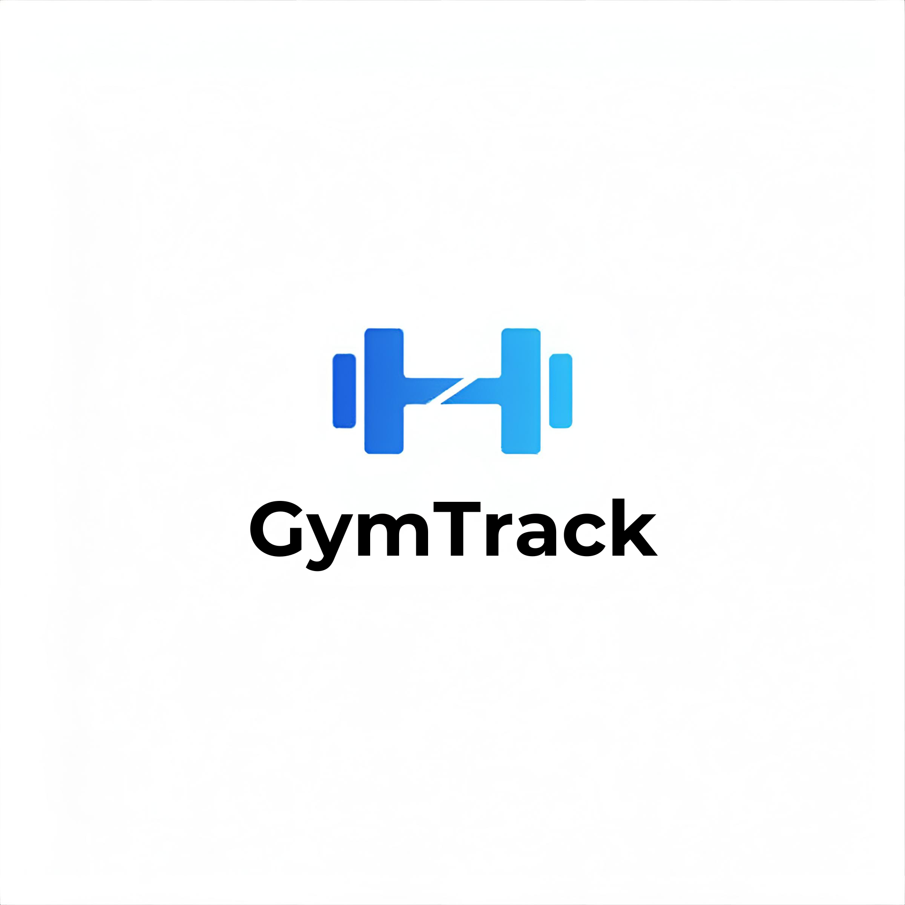
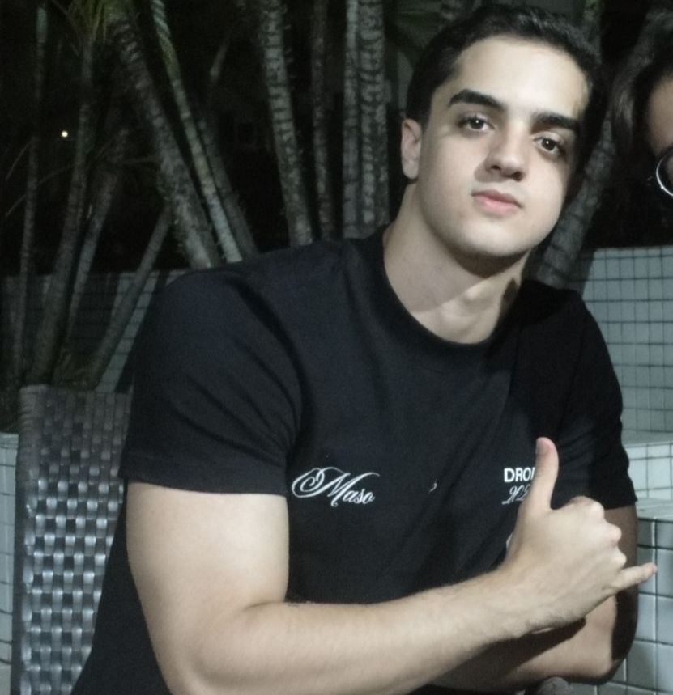
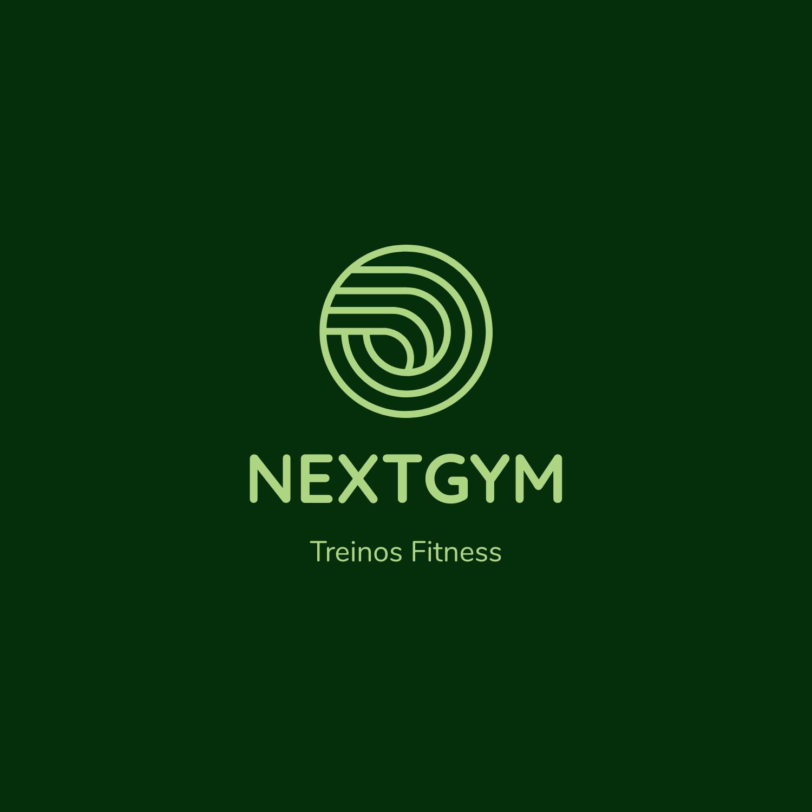
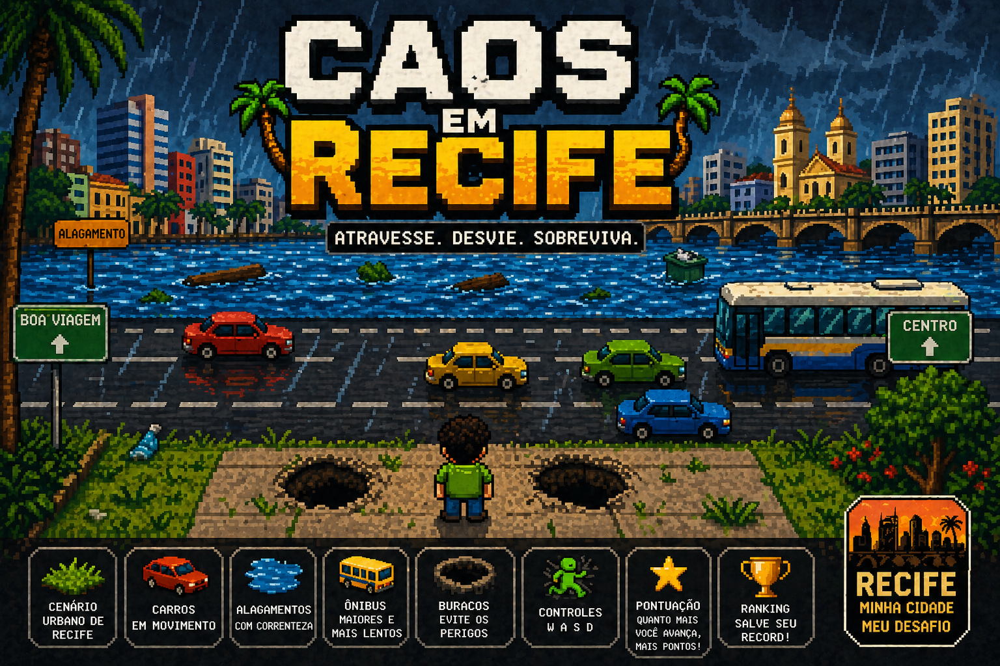
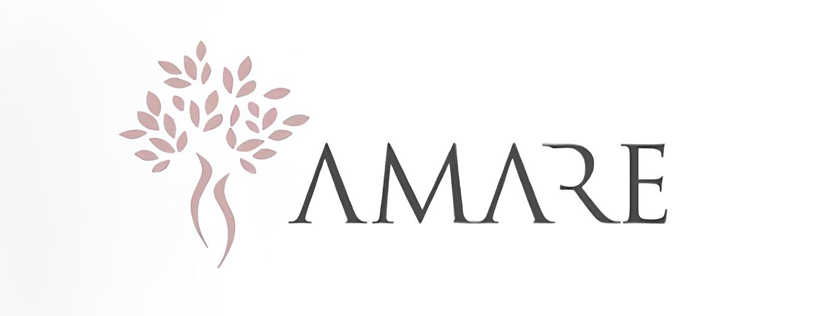

GymTrack
Sistema web para gerenciamento de treinos de academia, criado para auxiliar praticantes a organizarem, registrarem e acompanharem seus treinos de forma estruturada e eficiente.
Sobre mim · Desenvolvedor fullstack
Sou Marcelo Andrade da Fonseca, estudante de Ciência da Computação e desenvolvedor fullstack. Crio aplicações web, plataformas SaaS, sistemas de gestão e jogos em C com foco em usabilidade, organização de dados e experiência visual bem resolvida.

Front-end, back-end, produto, sistemas web e jogos em C.
Projetos selecionados

Sistema web para gerenciamento de treinos de academia, criado para auxiliar praticantes a organizarem, registrarem e acompanharem seus treinos de forma estruturada e eficiente.

Site institucional e funcional de uma academia fictícia, com foco em usabilidade, prevenção de erros e feedback claro para planos, modalidades, horários e agendamento.
Plataforma de gestão de ocorrências para segurança privada, com fila operacional em tempo real por polling, mapa OpenStreetMap, histórico com timestamps e métricas básicas.

Jogo simples em C inspirado em Crossy Road. O objetivo é atravessar a rua desviando de carros e obstáculos até chegar ao topo do mapa, com arquivos separados por jogador, obstáculo, mapa e jogo para facilitar manutenção.

Sistema web para acompanhamento da jornada de fertilidade, pensado para apoiar pacientes e equipe médica com mais clareza, acolhimento e baixa carga cognitiva.
Stack e direção
Meu foco é construir aplicações completas: interface bem resolvida, back-end organizado, dados consistentes, regras de negócio claras e uma experiência que faça sentido ponta a ponta.
HTML semântico, CSS responsivo, JavaScript, UI/UX, estados visuais e microinterações.
APIs, autenticação, validação de dados, regras de negócio, banco de dados e fluxos seguros.
Modelagem, organização por módulos, integrações, histórico, métricas e evolução do sistema.
Como eu construo
Entendo o problema, o público, as tarefas principais e os pontos onde o usuário pode errar.
Organizo hierarquia visual, fluxo, feedback, estados e responsividade antes de polir a UI.
Transformo a solução em código, separando responsabilidades e deixando o projeto fácil de evoluir.
Próximo passo